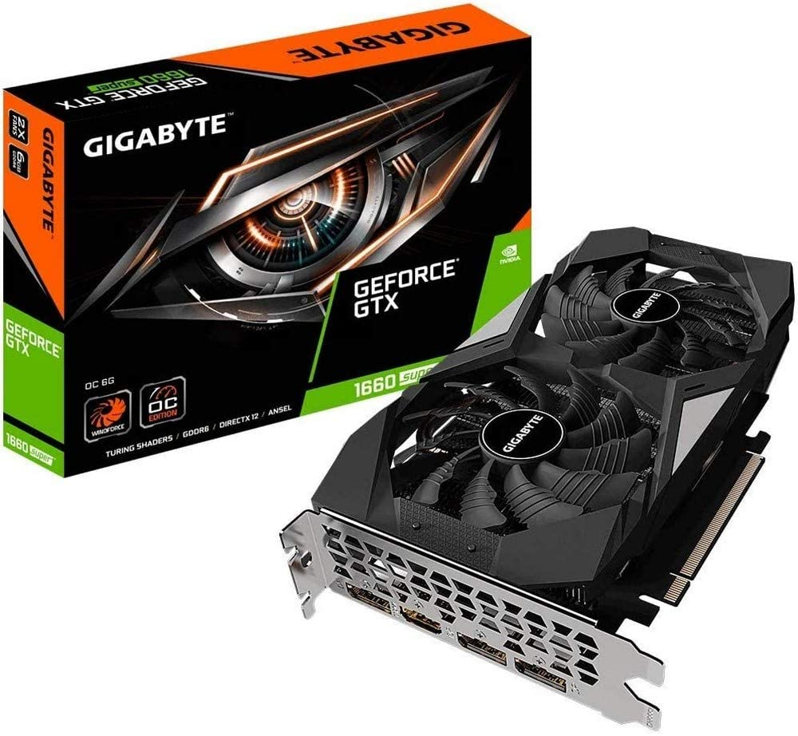

👾BETA TESTER`S👾
Expertos en gaming
COMPONENTES

ASUS ROG Strix B450-F Gaming II AMD AM4
- Enchufe AMD AM4: compatible con Ryzen 5000, CPU AMD Ryzen de 3ª/2ª/1ª generación
- Solución térmica optimizada: disipadores de calor VRM y PCH extendidos, disipadores de calor M.2
- Fácil de usar: con BIOS Flashback y ASUS exclusivo UEFI BIOS, 256 Mb BIOS Flash ROM y cubierta I/O premontada
- compatible con salida HDMI 2.0b (4K a 60Hz) y DisplayPort 1.2, con ranuras dobles M.2 (NVMe SSD), 2 ranuras PCIe 3.0x16, puerto USB 3.2 Gen 2 Type-A y puertos USB 3.1 Gen 2 Type-A y tipo C
AMD Ryzen 5 5600X 6 núcleos y 12 hilos
- Procesador de 6 núcleos más rápido de AMD para escritorio principal, con 12 hilos de procesamiento.
- Puede ofrecer un rendimiento de élite de 100 + FPS en los juegos más populares del mundo.
- Incluye el enfriador silencioso y capaz AMD Wraith Stealth 4.6 GHz Max Boost, desbloqueado para overclock, 35 MB de caché, soporte DDR-3200.

GeForce GTX 1660 Super OC 6G Graphics Card
- Circuito integrado de tarjeta madre: NVIDIA GeForce GTX 1660 Super
- Reloj Boost de 1815 MHz.
- Interfaz de memoria: 192 bits
- Memoria de vÃdeo: 6 GB GDDR6.
- Salida: DisplayPort x 3 (V1) 4)/ HDMI 2. 0B x 1
Tarjeta Grafica Nvidia Gt 1030 2gb Gigabyte
- Alimentado por GeForce GT 1030
- Integrado con memoria DDR4 de 2 GB de 64 bits
- Diseño de perfil bajo con tarjeta de 5.906 in de longitud
- Aumento: 1417 MHz/base: 1177 MHz en modo OC, aumento: 1379 MHz/base: 1151 MHz en modo de juego
- Overclocking con un solo clic a través del motor gráfico AORUS. Resolución máxima: 4096 x 2160, 60 Hz